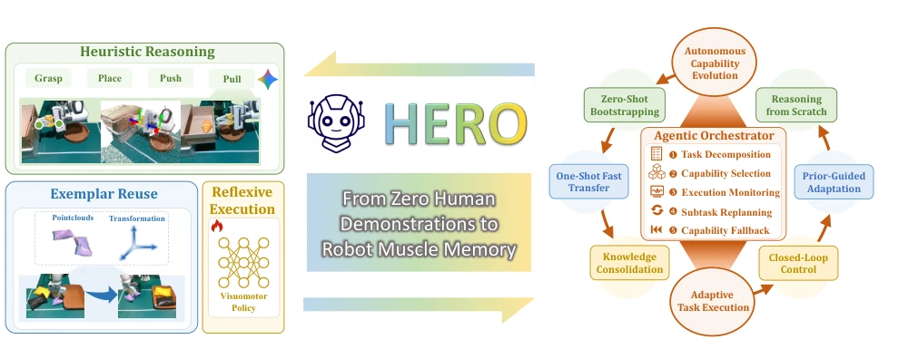
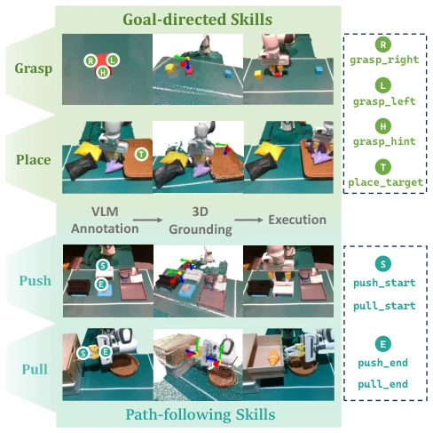
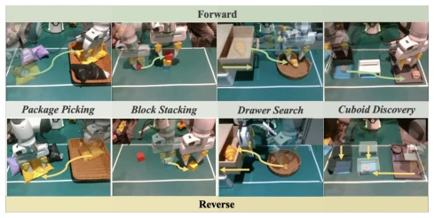
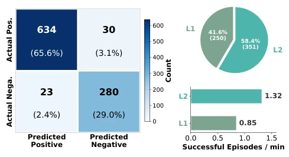
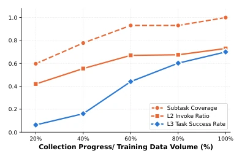

HERO attempts to enable robots to acquire muscle memory through "practice" like humans, starting from zero human demonstration, which is quite ambitious. It layers capabilities: L1 relies on VLM guessing (zero-shot), L2 relies on reusing old experience (one-shot), L3 relies on trained policies (closed-loop). The Orchestrator is responsible for scheduling. The highlight is indeed the evolution from reasoning to policy, but VLM reasoning is as slow as a snail (Table 2 shows L1 takes 46 seconds), and it relies on preset skill spaces, where human experts must first design atomic actions like "grasp", "push". The so-called "zero human demonstration" actually still requires human-assisted scene reset, still far from full unattended operation. However, training L3 policy to 86% success rate is indeed progress in open worlds, at least better than imitation learning that can only rote memorize, providing new empirical evidence for the "muscle memory" theory of embodied intelligence, but latency issues remain a hard flaw for deployment.
研究动机Motivation
通用机器人需要开放世界操作能力，但现有系统要么静态学习特定任务，要么依赖大量人类示范。模块化智能体（Liang et al. 2023）推理延迟高且经验复用有限；端到端视觉运动策略（Zitkovich et al. 2023）虽高效但缺乏自主获取能力。自改进智能体（Li et al. 2026）虽自动化数据收集，仍需初始人类示范。核心挑战在于：如何从通用推理起步，自主积累物理经验，并编译为高效操作能力？HERO 旨在解决这一“从推理到具身”的鸿沟，实现无需人类示范的能力演化，填补了静态技能与动态进化之间的空白，试图打破零样本与闭环执行之间的权衡困境。
General robots require open-world operation capabilities, but existing systems either statically learn specific tasks or rely on large amounts of human demonstrations. Modular agents (Liang et al. 2023) have high reasoning latency and limited experience reuse; End-to-end vision-motion policies (Zitkovich et al. 2023) are efficient but lack autonomous acquisition capabilities. Self-improving agents (Li et al. 2026) automate data collection but still require initial human demonstrations. The core challenge lies in: how to start from general reasoning, autonomously accumulate physical experience, and compile it into efficient operation capabilities? HERO aims to solve this "reasoning to embodied" gap, achieve capability evolution without human demonstration, fill the gap between static skills and dynamic evolution, and attempt to break the trade-off dilemma between zero-shot and closed-loop execution.
HERO adopts a hierarchical architecture, including Heuristic Bootstrapper (L1), Exemplar Accelerator (L2), and Reflexive Policy (L3). L1 utilizes VLM and 3D reconstruction (Depth-Anything-3) to generate atomic actions (e.g., Grasp, Place, Push, Pull), ensuring continuity through geometric constraints; L2 performs point cloud registration based on MT3 and SAM3, reusing historical trajectories to achieve fast transfer; L3 uses π0.5 to train closed-loop policies, directly mapping vision to actions. Orchestrator is responsible for task decomposition, capability selection, and monitoring. Evolution flow H→E→R: L1 generates experience, L2 accelerates accumulation, L3 distills policy. Execution flow R→E→H: Priority L3, fallback to L2 or L1 on failure. Scene reset is achieved through automatic reverse tasks, supporting continuous data collection, forming a closed loop.

Figure 1: Overview of the HERO framework. HERO enables continuous capability evolution from zero human demonstration to robot muscle memory. (1) Left: HERO incorporates three execution capabilities: Heuristic Reasoning for zero-shot bootstrap- ping, Exemplar Reuse for one-shot fast transfer, and Reflexive Execution for robust visuomotor control. (2) Right: Centered around an agentic orchestrator, HERO seamlessly coordinates two operational loops: autonomous data evolution for experience accumulation and adaptive task execution for reliable real-world deployment.

Figure 2: Visualization of the four primitive action skills in L1, illustrating the process from VLM annotation to 3D grounding and robot action execution.
Tested 4 real tasks on Franka Panda robot (Package Picking, Block Stacking, Drawer Search, Cuboid Discovery). Collected 664 trajectories, trained L3 policy. HERO average success rate 86.0%, better than single layer (L1 76.0%, L3 70.0%). L3 dominates execution (86.7%), L1 and L2 serve as fallback. Latency analysis shows L1 slowest (46.57s), L2 faster (20.96s). Failure analysis indicates L3 mainly due to policy execution errors (WPE), L1 due to VLM annotation errors (WVA). Closed-loop monitoring effectively recovers some failures, but perception noise remains a bottleneck. Table 1 shows combined strategy significantly better than single strategy, validating the necessity of hierarchical scheduling.

Figure 3: Illustration of the real-world task settings. All tasks share basic manipulation skills (grasp and place). While the Drawer Search task additionally requires both pull and push, and the Cuboid Discovery task requires push only.

Figure 4: (1) Left: Subtask outcome prediction matrix demonstrating the orchestrator’s reliable closed-loop mon- itoring. (2) Top Right: Data contribution ratio between L1 and L2. (3) Bottom Right: Data collection efficiency mea- sured by successful subtask episodes collected per minute.

Figure 5: Capability evolution of HERO via autonomous experience accumulation.